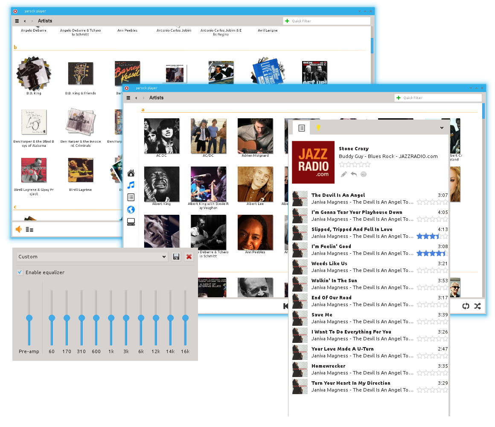
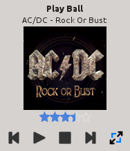
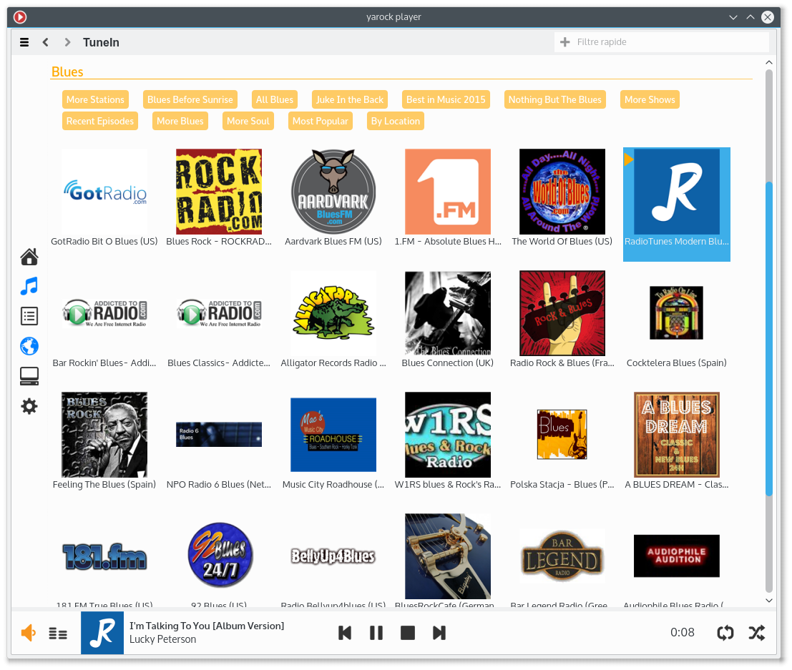
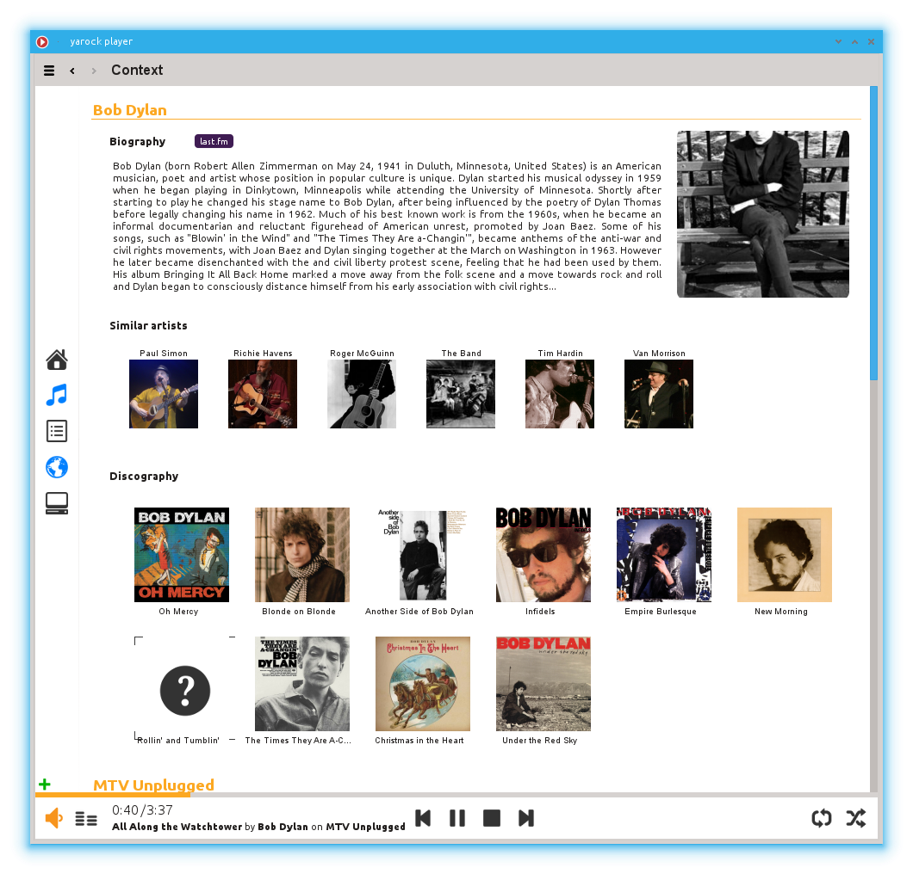

Yarock is a modern looking music player, packed with features, that doesn’t depend on any specific desktop environment.
Yarock is designed to provide an easy and pretty music browser based on cover art.
Yarock is easy to build with a minimal set of dependancies, and offers the choose of differents audio back-end.
Music Browser
Browse your local music collection based on cover art with multiple views :
artists, albums tracks, genre, years views, folders and files
Smart playlist generator
Simply drag and drop from music browser to playqueue
Easy search and filter music collection
Rate tracks, albums or artists
Save song ratings and play counts
Support multiple music collection
|

|
Audio Playback
Multiple audio back-ends (Phonon, vlc, mpv)
Replay Gain support (phonon)
Gapless playback (phonon gstreamer, mpv)
Supports MP3, Ogg Vorbis, FLAC, WMA, MPEG-4 AAC music files (depending on audio back-end)
Audio equalizer
|

|
User Interface
Simple playqueue with cover and rating
Minimal window mode
Mpris 2 interface
Desktop notifications
Media shortcut support
Command line interface
|

|
Web radio streaming
Support best radio stream services (TuneIn, SHoutCast, Dirble)
Search with TuneIn/Dirble services
Save your favorites radio
|

|
Context View
Thanks to integrated services (Echonest, DiscoGs, LastFM, Lyrics services) the context view provides usefull information.
Artist biography
Similars artists
Albums contents and cover
Songs lyrics
|

|
{kind=link}

{kind=link}
{kind=link}
{kind=link}
{kind=link}